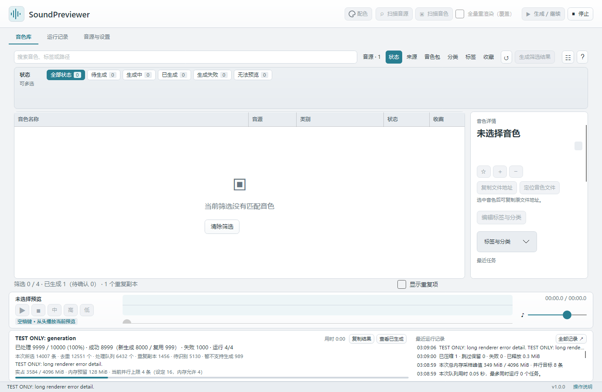

生成与试听
本页内容：
试听模板
打开「音源与设置 → 试听与存储」：
- 「快速预览」默认开启，每个音区 0.5 秒，可设 0.1–4 秒。
- 默认低、中、高音分别为 C2、C4、C6；生成后的播放顺序为 中 → 高 → 低。
- 关闭快速预览后，可设置按键时长与尾音；使用 Vital 时，可点击「采用 Vital 原生参数」。
保存设置后生效。修改模板不会自动覆盖已有有效预览；需要更新某个音色时，可单独重新生成。
选择生成范围
建议先选一个音色，在详情中点击「重新生成此音色」，核对三个音区后再批量处理。顶部「生成 / 继续」和「生成筛选结果」都只处理当前搜索与筛选结果，已有有效预览自动跳过，只实际生成缺少或失效的预览。生成结束保留当前筛选；想处理全库时先清空筛选。
“已处理完成”包含因生成条件未满足、达到重试上限而跳过的项目，不等于全部生成成功。「未选择生成方式」表示尚未选定生成方式；「已配置，暂不可用」表示已有设置，但具体路径、版本、环境或格式检查未通过。结束汇总和对应音色的最近任务结果会显示音源及具体原因，设置会保留，修正对应问题后可继续。跨路径重复音色共用有效预览，不重复生成。
复制结果与加载检查
需要反馈生成问题时，点击底部进度区的「复制结果」可复制完整汇总，长文本不会按界面省略号截断。选中音色后，详情中的「复制生成结果」会复制音色名称、来源、音源版本和最近任务描述；描述与运行记录也可选中文字后复制。
Serum 显示「经过验证疑似加载失败」时，表示输出与未加载预制时的启动声音近似，本次预览未保存。音源版本过旧是可能原因，请在 Serum 中打开该音色查看提示；若要求较新版本，更新后重试。仅凭声音近似不会断定版本过旧；Serum 2 预制元数据与实际插件状态能确认版本差异时，会明确显示「需要更新 Serum 2」及版本信息。旧失败记录也会显示上述解释，保留原始记录与旧预览。
队列进度与停止
生成时实时显示已处理、成功（分别列出新生成与复用）、失败，以及未选择生成方式、暂不可用、达到重试限制的数量。点击「停止」会保留已完成结果；下次继续未完成项。首次生成可能先建立声音参照、校准内存，慢起音也可能延长采集，因此最终试听很短不代表生成耗时一定很短。
生成进度、内存信息和最近运行记录固定在播放栏下方。开始、停止或长错误不会推动音色列表；过长说明可悬停查看，点击「全部记录」打开完整日志。
音色库总量与本次处理队列分别显示。例如所选 14007 条、重复 1456 条，去重后为 12551 个；其中待识别 5130 个、当前不支持生成的格式或银行条目 989 个，进入处理队列的就是 6432 个。队列也包括复用已有预览和因生成条件未满足而跳过的项目，分母不是整个库的去重总量。进度区固定预留空间，说明换行和内存提示显隐不会推动下方列表。
「运行 1/1」的分母为当前实际可用并行上限；下方另列设定上限和内存允许数量。例如设为 8、内存允许 3，但该音源被手动关闭「允许同时生成」，当前上限仍为 1。界面会显示限制原因；首次测量、准备声音参照和队列末尾剩余数量也会影响当前上限。默认允许同一种音源并行，仍受所设内存预算与预测预留限制。
程序优先连续处理同一种音源。允许同源并行时集中生成；同源不允许多开时，可用其他音源补充空闲位置。每个音色仍独立加载插件。
播放器与快捷键
选中音色后，按空格键可从头播放当前音色预览，播放中再次按下也会从头重播。按住空格不会连续重启；搜索、标签等文本输入及筛选控件保留原有空格操作。底部播放区常驻显示快捷键提示，也可用按钮播放、停止，或直接试听「中 / 高 / 低」音区。拖动进度条定位，右侧滑块调音量。
五种状态
列表与状态筛选统一为五类：
| 状态 | 含义与操作 |
|---|---|
| 待生成 | 尚无可用预览，配置好音源后点击「生成 / 继续」 |
| 生成中 | 正在生成；可停止并保留已完成结果 |
| 已生成 | 有可播放的预览；是否需要试听确认、最近重做是否失败，在右侧详情中说明 |
| 生成失败 | 本次未能生成且没有可用旧预览，请查看详情原因 |
| 无法预览 | 当前格式不支持、文件无效、来源缺失或尚未确认音源；右侧给出原因与处理方式 |
生成的音频仍须核对音色与外部资源。需要确认的预览在详情保留「确认预览对应此音色」按钮；确认操作、旧记录及缓存兼容不变。重复副本使用独立的显示开关和详情说明，不再增加一种状态。
并行与内存预算
在「音源与设置 → 预览生成」设置「并行数量」：新安装默认「自动」，也可手动选择 1 / 2 / 4 / 8 / 16 条。自动按物理核心数选择档位，四核优先 4 条，再按实际内存开销限制同时运行数量。各音源默认开启「允许同时生成」；已明确关闭的设置继续保留，更新或重新关联音源不会重置选择。首次安装或更新 Vital 后先单独生成一次。
「内存预算」可选择 1–16 GiB，默认 4 GiB，统计主程序和全部生成子进程的合计内存。保存后从下一批生成生效，手动建立声音参照也使用同一预算。预算留出 256 MiB 余量用于暂停新增任务，实占超过预算则停止本批并保留已完成预览；例如 16 GiB 预算对应 15.75 GiB 的新增任务阈值。音源先单条校准，启动判断同时计算实际占用和预测预留，因此不保证占满预算或始终达到设定并行数。插件瞬时分配可能越过采样间隔，这不是操作系统级硬配额。
